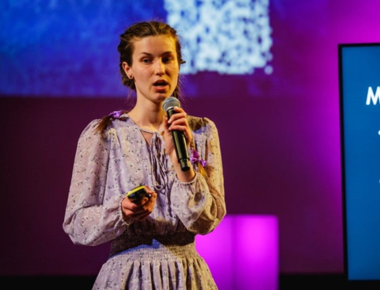
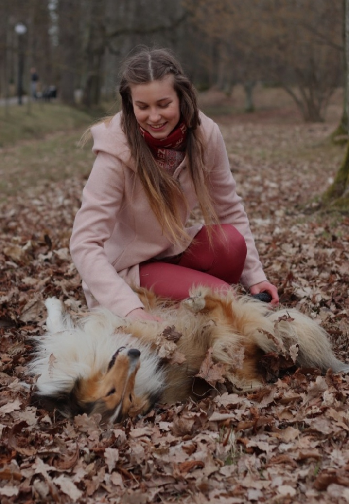
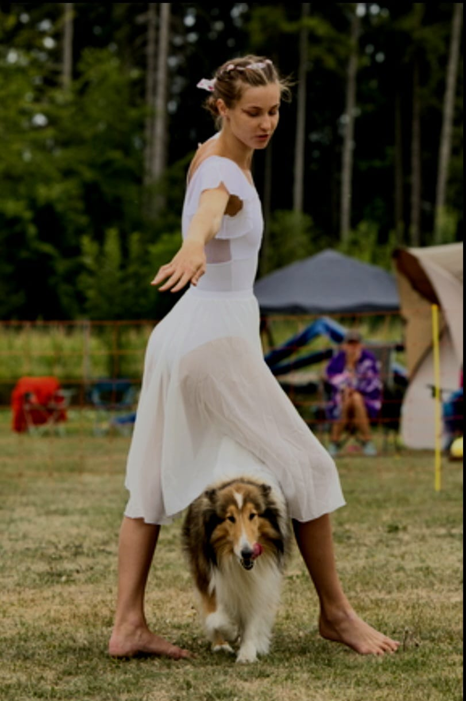

Magistritöö
Koeratoidu töötlemine ja analüütiline koostis
Uurisin, kuidas erinevad tootmismeetodid mõjutavad koeratoidu analüütilist koostist ning kas tegelikud toitainesisaldused vastavad pakendil esitatud väärtustele.
Vaata TalTechi digikogus →Taust ja kogemus
Olen töötanud koeratoidu tootearenduses alates 2022. aastast ning juhtinud ka teadus- ja arendustööd Põhjamaade lemmikloomatoiduettevõttes Pala Petfoods Estonia OÜ. Minu töö on hõlmanud retseptide koostamist, toitainesisalduse hindamist ja tootmisega seotud probleemide lahendamist.

Olen Kerit-Lii, toidutehnoloog ja toiduteaduse magister. Olen alates 2022. aastast tegelenud koeratoidu arendamisega, sealhulgas retseptide koostamise, tooraine valiku, toitainesisalduse hindamise, tootmisprotsesside ja tootekvaliteediga.
Minu peamine huvi on looduslik ja vähe töödeldud koeratoit, sealhulgas toortoit, kodus valmistatud toit ning õhkkuivatatud ja külmkuivatatud toit.
Ka minu ülikooliaegsed uurimistööd olid seotud koeratoidu koostise, kvaliteedi ja töötlemisega. Lisaks on mul laboritöö kogemus toidumikrobioloogia ja analüütiliste meetodite alal.
Töötan nii koeratoidu ettevõtete kui ka koeraomanikega. Ettevõtetel aitan arendada uusi tooteid, koostada ja parandada retsepte, valida sobivaid koostisosi ning leida lahendusi tootmisega seotud küsimustele.
Koeraomanikel aitan hinnata nende koerte praegust toitu ja leida sobivaid toitmisvõimalusi, arvestades koera vanust, aktiivsust, kehakonditsiooni ja vajadusi.
Kuidas kõik algas

Minu huvi koerte toitumise vastu sai alguse tänu mu esimesele koerale Alassiele, kes polnud tavalisest kuivtoidust kunagi eriti vaimustuses. Hakkasin otsima teisi toitmisvõimalusi ja uurima, kuidas toit mõjutab koera seedimist, karvkatet ja üldist enesetunnet.
Nii tekkis mul järjest suurem huvi toiduteaduse vastu, mida läksin ka ülikooli õppima. Hiljem jõudsin koeratoidu tootearenduseni ning nüüd saan oma teadmisi kasutada nii uute toodete arendamisel kui ka koeraomanike nõustamisel.
Elu koertega

Koerad on suur osa minu igapäevaelust, mitte ainult minu tööst. Mul on kaks pikakarvalist colliet, Alassie ja Bequi, ning olen neid aktiivselt treeninud alates kutsikaeast.
Võistleme rallikuulekuses, kus mõlemad koerad on jõudnud kõrgeimasse võistlusklassi. Oleme tegelenud ka kuulekusega ning viimastel aastatel avastanud enda jaoks koeratantsu. Meie esimene ametlik koeratantsuvõistlus toimus 2026. aasta märtsis.
OLisaks koeraspordile armastame koos pikki matku ette võtta. Nii treeningud, võistlused kui ka matkad on mulle oma kogemuse kaudu näidanud, kui oluline on koera toitmisel arvestada tema aktiivsuse, vanuse, kehakonditsiooni ja taastumisvajadusega.
Olen oma õpingute ja teadustöö käigus uurinud koeratoidu koostist, kvaliteeti, töötlemist ja mikrobioloogiat. Lisaks olen osalenud biotehnoloogia valdkonna laboriuuringutes.
Magistritöö
Uurisin, kuidas erinevad tootmismeetodid mõjutavad koeratoidu analüütilist koostist ning kas tegelikud toitainesisaldused vastavad pakendil esitatud väärtustele.
Vaata TalTechi digikogus →Bakalaureusetöö
Uurisin koeratoidu mikrobioloogilist kvaliteeti säilitamise ajal, keskendudes muu hulgas tootekvaliteeti mõjutavatele mikroorganismidele.
Vaata TalTechi digikogus →Teaduspublikatsioon
Olen kaasautor eelretsenseeritud teadusartiklis, mis käsitleb pärmi eksopolüsahhariididel põhinevaid hüdrogeele vähirakkude sferoidide kapseldamiseks.
Vaata publikatsiooni →Teeme koostööd
Aitan nii koeratoidu ettevõtteid kui ka koeraomanikke. Vaata lähemalt, milliseid teenuseid pakun.
Selle veebilehe kaudu pakutav toitumisnõustamine ei asenda veterinaarset läbivaatust, diagnoosi ega ravi. Diagnoositud või kahtlustatava terviseprobleemiga koer peab jääma loomaarsti järelevalve alla.